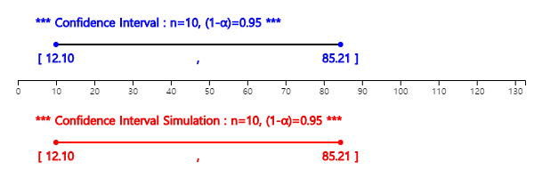

Examples of estimating the population variance are as follows.
- Two companies supply bolts to an automobile maker. Bolts are defective if they are too large or too small in diameter. The automobile maker wants to know the variance of bolt diameters supplied by each bolt company and use them as data for selecting the better one.
- In order to evaluate the difficulty of the college entrance exam conducted this year, the variance of exam scores is calculated and compared with the variance of exam scores in previous year.
In order to estimate the population variance, the sampling distribution of all possible sample variances
should be used. As discussed in [Example 6.3.1], for an infinite population, the mean of all possible
sample variances is the population variance. That is, the sample variance \(S^2\) is an unbiased estimator
of the population variance \(σ^2\). Therefore, the sample variance is used to estimate the population
variance. In addition, estimation of the population standard deviation \(σ\)uses the sample standard
deviation \(S\), but it should be noted that the sample standard deviation is not an unbiased estimator of
the population standard deviation. However, as the sample size increases, there is no significant error
in using \(S\) as an estimator of \(σ\).
[Theorem 6.3.2] Point estimation of the population variance \(σ^2\)
⇒ Sample variance \(S^2\) (\(S^2\) is an unbiased estimator of \(σ^2\))
Point estimation of the population standard deviation \(σ\)
⇒ Sample standard deviation \(s\) (\(s\) is not an unbiased estimator of \(σ\))
In the previous section, when a population was normally distributed, we found that the sample variance
multiplied by a constant, \( \frac {(n-1)S^2}{\sigma^2} \), follows the chi-square distribution with
\(n-1\) degrees of freedom. Using this, we can find the confidence interval of the population variance
\(σ^2\) as follows:
[Theorem 6.3.3]100(1-α)% Confidence interval of the population variance \(σ^2\)
Assume that a population is normally distributed.
$$
\left[ \frac {(n-1)S^2}{\chi^2_{n-1: α/2} }, \frac {(n-1)S^2}{\chi^2_{n-1: 1-α/2} } \right]
$$
where \(S^2\) is the sample variance, \(χ^2_{k:p}\) is the 100\((1-p)\) percentile of the chi-square
distribution with \(k\) degrees of freedom.
100(1-α)% Confidence interval of the population standard deviation \(σ\)
Assume a population is normally distributed and the sample size is large.
$$
\left[ \sqrt { \frac {(n-1)S^2}{\chi^2_{n-1: α/2} } }, \sqrt { \frac {(n-1)S^2}{\chi^2_{n-1: 1-α/2} } }\right]
$$
Example 6.3.2
A survey for the starting salary of 25 college graduates this year shows the sample standard deviation is 5 (unit 10000won). Find point estimation and 95% confidence interval of the population variance and the population standard deviation of the starting salary. Assume that the population is normally distributed.
Answer
The point estimate of the population variance for the starting salary of college graduate is
the sample variance, so \(s^2 = 5^2 =\) 25. Since the point estimate of the population standard deviation
is the sample standard deviation, so \(s =\) 5.
The 95% confidence interval of the population variance is as follows.
$$ \small
\begin{multline}
\shoveleft \left[ \frac {(n-1)S^2}{\chi^2_{25-1: 0.05/2} }, \frac {(n-1)S^2}{\chi^2_{25-1: 1-0.05/2} } \right] \\
\shoveleft ⇒ \left[ \frac {(25-1)5^2}{39.364}, \frac {(25-1)5^2}{12.401} \right] \\
\shoveleft ⇒ \left[ 15.242, 48.383 \right]
\end{multline}
$$
The 95% confidence interval of the population standard deviation is as follows.
$$ \small
\begin{multline}
\shoveleft ⇒ \left[ \sqrt{15.242}, \sqrt{48.383} \right] \\
\shoveleft ⇒ \left[ 3.904, 6.956 \right]
\end{multline}
$$
Example 6.3.3
The height data of 10 male samples from freshmen in a college is as follows:
171 172 185 169 175 177 174 179 168 173
Using 『eStatU』, find a 95% confidence interval for estimating the population variance of college freshmen.
Answer
On the menu of 『eStatU』, click ‘Estimation : \(σ^2\) Confidence Interval’ and enter data in the
[Sample Data] box as shown in <Figure 6.3.4>. The system will show the confidence interval
[12.10, 85.21] immediately by using the chi-square distribution.
<Figure 6.3.4> 『eStatU』 Estimation of population variance
In this module of 『eStatU』, a simulation experiment to investigate the size of the confidence interval
can be done by changing the sample size \(n\) and the confidence level 1 - α
as in <Figure 6.3.5>. If you increase \(n\), the interval size becomes narrower.
If you increase 1 - α, the interval size becomes wider.

<Figure 6.3.5> 『eStatU』 simulation for the confidence interval of the population variance
You can enter only the sample size and sample variance to calculate the confidence interval in this 『eStatU』 module without entering data.
Practice 6.3.1
A team of health researchers wants to measure the average amount of oxygen consumed after a certain standard exercise for men between ages of 17 and 21. Data of a simple random sampling of 10 persons are as follows.
2.87 2.05 2.90 2.41 2.93 2.94 2.26 2.21 2.20 2.88
Use 『eStatU』 to find a 95% confidence interval of the population variance of oxygen consumed.
Multiple Choice Exercise
*** Choose one answer and click [Submit] button
6.12 What is the most appropriate sample statistic to estimate the population variance when we collect \(n\) samples by simple random sampling from a normal population?
6.13 If the measured values of a sample collected randomly are \(x_1 , x_2 , ... , x_n\) and their sample mean is \(\overline x\), which of the following is an unbiased estimator of the population variance?